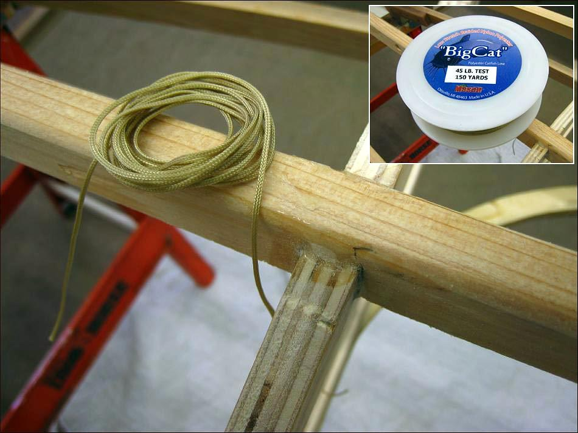

| Lash / Glue Frame | Menu Previous Page Next Page |
|

Lashing / Gluing has the advantage of requiring no drilling through the stringer / cross sections. In addition, lashing encloses the connection, and when epoxied, makes it nearly impossible for the stringer and chine to seperate while in use. The lashing is 45lb test polyester fishing line. The glue is West Systems Epoxy Resin with no filler. Any epoxy Resin will do the job. The thinner the epoxy resin the better as it will more easily saturate the polyester fibers of the fishing line.
|
|